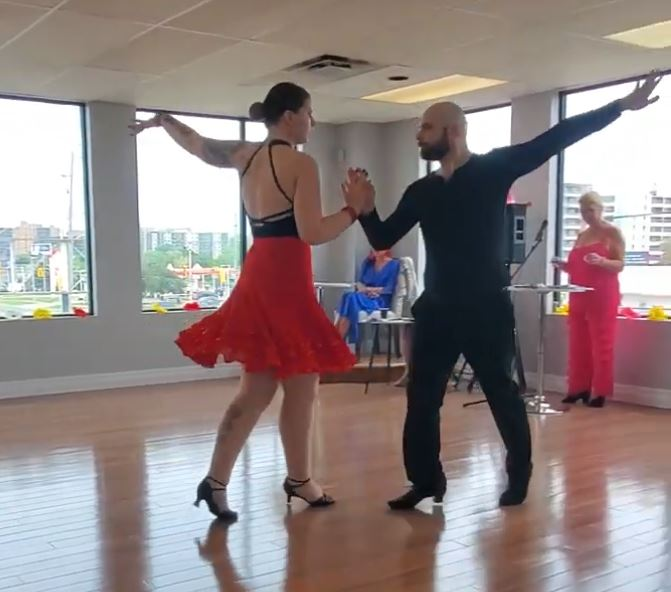

Hello! My name is Adrian Popielas and I am a driven and passionate mechanical engineer. I have many years of experience in
mechanical and electrical engineering, working on projects such as autonomous mobile robotics, e-mobility, power train design,
and product design. I recently started a freelance/consulting business to help others turn their prodcuts into reality!
Click the button below to learn more! Continue on to learn more about my work and me personally!

Below is a brief summary of my work experience. If you have any questions or would like more info please reach out!

Clearpath Robotics
August 2021 - October 2024
- Completed full system design tasks for multiple robot projects including mechanical and electrical design, testing, and documentation.
- Created 3D Parametric Solid Model Designs and 2D Drawings using Geometric Dimensioning and Tolerancing techniques to facilitate the development of new products and the continuous improvement of existing platforms.
- Developed a new product (TurtleBot 4) from concept to market including design, engineering, test developments, and transitioning the project to the Production Team.
- Interacted with local and overseas suppliers for parts used in large scale and smaller scale projects. Manufacturing methods included sheet metal, injection molded plastics, 3D printing, and CNC machining.
- Worked with other members of a diverse interdisciplinary team to aide customers with issues and provide updated design solutions.
- Presented at ROSCon in Kyoto, Japan in 2022 and the Think, Sense, Act Podcast about the product development process for the Turtlebot4. Presented on camera for robot platform promotion.

Accelerated Systems Inc.
September 2018 - August 2021
- Performed engineering calculations for safety critical components of gearbox and motors.
- Strong experience with Solidworks for mechanical design of prototypes as well as mass manufactured products including electric motor parts and electronics for electric vehicles.
- Experience performing FEA simulations to verify design prior to manufacturing.
- Developed, completed, and reported on tests for product validation and verification.
- Hands on with rapid prototype building, testing, and debugging including machine shop usage.
- Created drawings with GD&T best practices, including Bills of Material (BOM). Maintained revision control through Product Data Management (PDM).

Averro Robotics
February 2018 - August 2018
- Prototype design and build of cable climbing robot to facilitate safer and lower cost inspection of communication tower guy wires using Autodesk Fusion 360.
- Created mechanical drawings and packages for third party machine shops using GD&T best practices.
- Researched applications of LIDAR for tower structural inspection through ground based and drone deployment.
To download my resume, click the button below.
This section will display some past personal projects. It will perpentually be under construction as I do and add more projects. For now, please enjoy thi small selection of projects.
Custom Engagement Ring
While looking for engagement rings I couldn't find anything that felt personal enough. I stumbled on a service provided by a jeweller in Toronto that could 3D print wax jewelry casting and then cast with personal metals.
I figured with my CAD experience I could try to make my own design, which I knew my partner would greatly appreciate. So I decided on the gem sizes, researched jewely design guides, and set out to create a design.
The inspiration of the design was two A's coming together since both of our names start with A. It also illicits a fish shape which alludes to our year living in St. John's which was a particularly formative time in our relationship.
I decided to use a central 2.5 karat marquise cut center moissanite gem flanked by two round cut black moissainite gems. I asked her grandmother for some sterling silver which came from a teaspoon that was part of a wedding gift she received.
Before committing I had a resin 3D print made to make sure it looked good physically and to do a test fit with the gems.

Finally, I took all of this to the jeweller and had them cast and put together the ring.

Lego Millenium Falcon
Inspired by a post on reddit.com/r/IndustrialDesign, I purchased a small lego set (75295) of an iconic Star Wars ship and am modelling each piece in order to practice my modelling skills in Fusion 360 (and for fun). Once modelling is complete, appropriate materials will be applied to components for a photorealistic render.
Ballroom & Latin Dance
My partner and I have been dancing since 2017 when we were first swept up in the acivity. What started as a fun activity just for the summer became a passion for the two of us. We love that we get to have a date-night activity all the time that exercises not just our bodies but also our minds. We currently have Rumba, Cha Cha, Mambo, East Coast Swing, West Coast Swing, Foxtrot, Waltz, Viennese Waltz, and Tango as part of our repertoire! We have dreams of doing amateur dance competitions internationally!
Reading
 When I was a kid, I couldn't put my books down. As I grew older I started spending more time with friends, doing part time work, and doing other hobbies and reading started to fall to the wayside. As an adult I was greatly influenced to get back into reading by my partner who is an avid reader. Now I read every night, and if a book is incredible, I find myself reading throughout the day when I have some time. I will read anything that catched my interest, from fantasy epics like the Stormlight Archive from Brandon Sanderson to historical non-fiction like Enemy of All Mankind by Steven Johnson.
When I was a kid, I couldn't put my books down. As I grew older I started spending more time with friends, doing part time work, and doing other hobbies and reading started to fall to the wayside. As an adult I was greatly influenced to get back into reading by my partner who is an avid reader. Now I read every night, and if a book is incredible, I find myself reading throughout the day when I have some time. I will read anything that catched my interest, from fantasy epics like the Stormlight Archive from Brandon Sanderson to historical non-fiction like Enemy of All Mankind by Steven Johnson.
My current read is Promise of Blood by Brian McClellan while my Audiobook at the moment is Chip Wars by Chris Miller
Travel
 I love to travel! I think there is so much to see and experience in this vast world and I want to spend my life enjoying as much of it as I can! My goal is to do a major trip at least once per year. This year I travelled back to Newfoundland for my honeymoon. The trip was incredible and it was so great to revisit some places that I had been to when I lived there. A highlight of that trip was when we encountered some whales while sea kayaking. I have a long list of trips I would love to take at some point in my life including riding on horseback in the Mongolian steppe, taking a train through the Alps from Switzerland to Italy, and visiting Africa to see safari wildlife.
I love to travel! I think there is so much to see and experience in this vast world and I want to spend my life enjoying as much of it as I can! My goal is to do a major trip at least once per year. This year I travelled back to Newfoundland for my honeymoon. The trip was incredible and it was so great to revisit some places that I had been to when I lived there. A highlight of that trip was when we encountered some whales while sea kayaking. I have a long list of trips I would love to take at some point in my life including riding on horseback in the Mongolian steppe, taking a train through the Alps from Switzerland to Italy, and visiting Africa to see safari wildlife.
Here is a picture of me sitting in the Traditional Japanese Village (Saiko Iyashi-no-Sato Nenba) with Mount Fuji in the background.